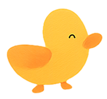
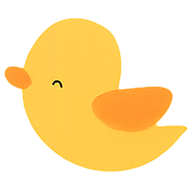
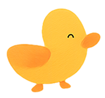
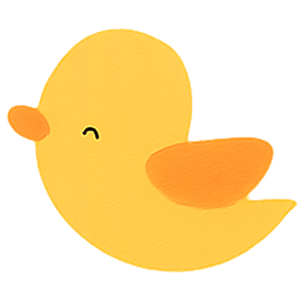

Life at Tiny Birds Kindergarten
Every day at Tiny Birds is filled with laughter, learning, and little moments that help children grow with confidence and joy.
A Happy Daily Routine
Our day begins with warm welcomes, followed by play-based learning, creative activities, story time, and peaceful rest moments.
Learning Through Play
Children explore colors, music, stories, and movement through guided play. Learning happens naturally as curiosity leads the way.
Care, Safety & Comfort
Our experienced teachers ensure a clean, safe, and caring environment where every child is supervised, supported, and respected.
Growing Together
At Tiny Birds, children build friendships, learn kindness, and develop confidence — preparing them gently for the next stage of learning.